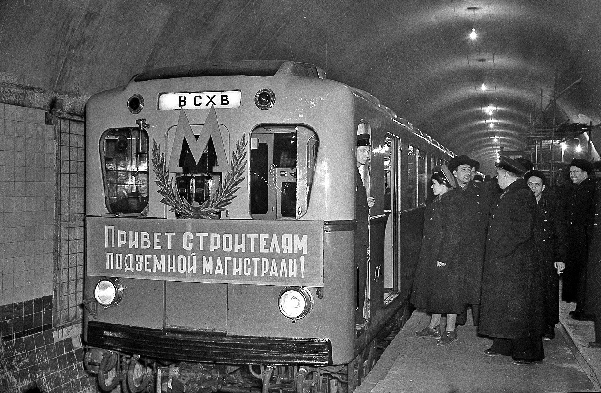
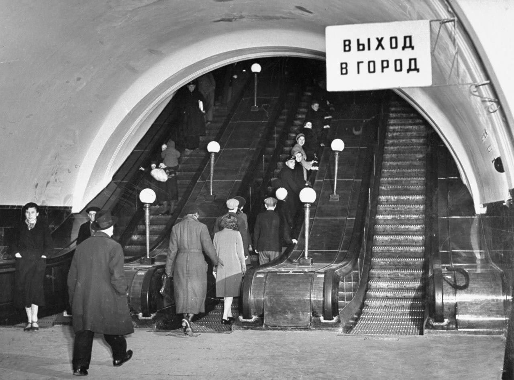
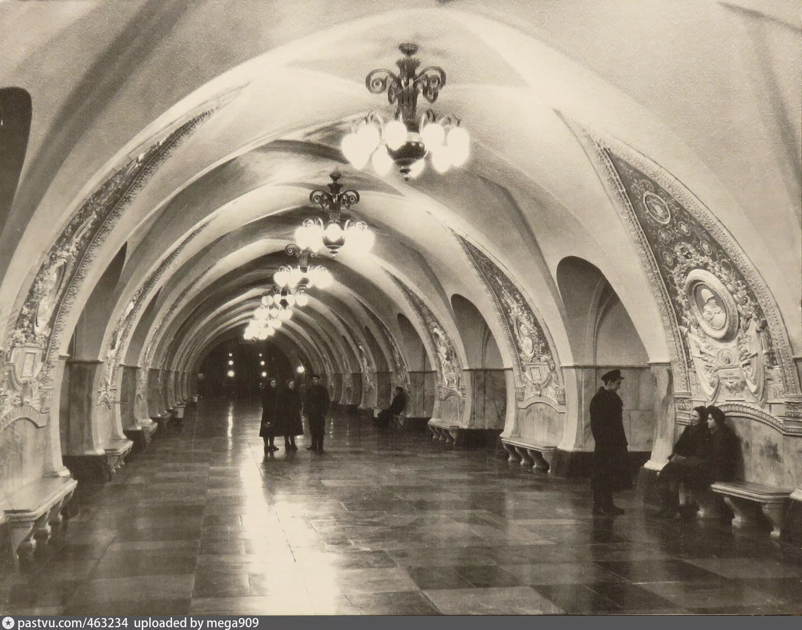
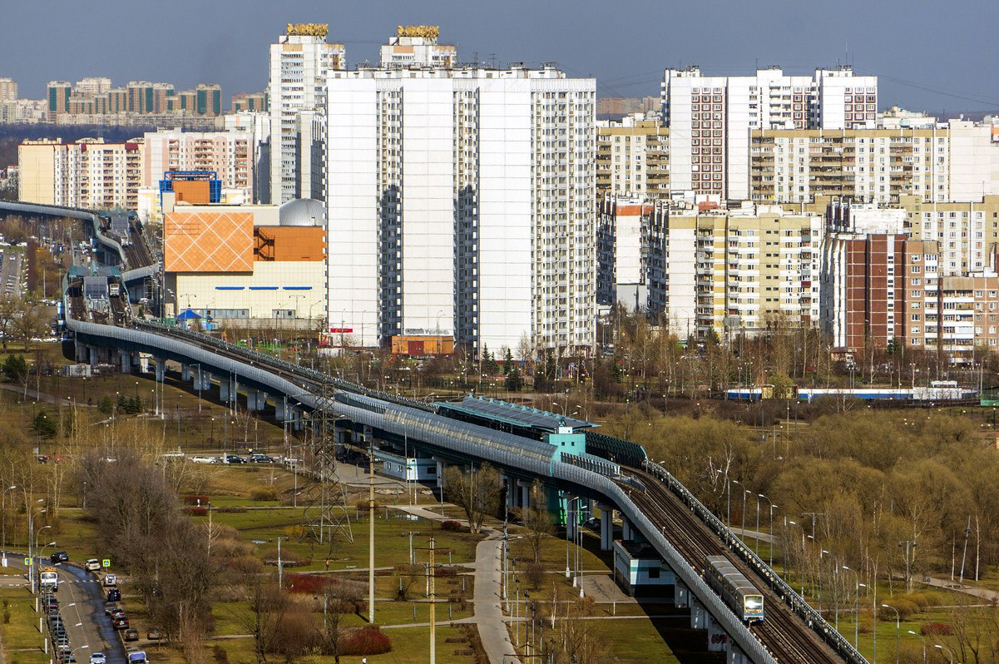

|  | 15 мая 1935 года метро открылось. Поезда пошли сразу по двум маршрутам:
от «Сокольников» через центр до «Парка культуры» и от «Сокольников» с ответвлением от «Охотного
Ряда» до «Смоленской» с 13 дворцами-станциями.
Эти маршруты дали начало будущим Сокольнической и Арбатско-Покровской линиям, а затем —
гигантской подземной железной паутине.
Поездка на метро от «Сокольников» до «Парка культуры» или до «Смоленской» длилась 21,5 минуты, а тот же маршрут на трамвае занимал более двух часов. |
|
В сентябре 1938 года завершилось строительство второй очереди метро. Она включала в себя
Покровский радиус со станциями «Площадь Революции» и «Курская», а также Горьковский радиус
(участок нынешней Замоскворецкой линии) протяженностью в 9,5 километра со станциями «Площадь
Свердлова» («Театральная»), «Маяковская», «Белорусская», «Динамо», «Аэропорт» и «Сокол».
Великая Отечественная война не остановила метростроителей — они продолжали возводить третью очередь подземки. Метро двинулось на юг и восток Москвы. За годы войны проложено более 13 километров линий и открыто семь станций. |
 |
|  |
Еще во время войны началось строительство Кольцевой линии, а вскоре после Победы — и
Новоарбатского радиуса. Кольцо замкнулось 14 марта 1954 года. В 1951—1960 годах проложено 58
километров подземки и открыта 31 станция.
В 1960-е новые линии связали с кольцом недавно построенные удаленные районы — Черемушки, Кунцево, Нагатино, Кузьминки… Появились оранжевая и фиолетовая линии — Калужская и Ждановская, — будущая Таганско-Краснопресненская. |
|
В советской истории строительства Московского метрополитена рубеж 1970−1980-х годов стал
наиболее продуктивным. В 1983-м была введена в эксплуатацию с нуля новая Серпуховская линия с
восемью станциями — от «Серпуховской» до «Южной». Однако по темпам строительства ударила
перестройка.
В лихие 1990-е строительство резко затормозилось. Завершались проекты, запущенные еще при СССР. Появились северный участок Серпуховско-Тимирязевской линии от «Савеловской» до «Алтуфьева» и Люблинская линия. |
|
|  |
В новом столетии линии метро продлеваются за МКАД, запускается Бутовская линия легкого метро.
Арбатско-Покровская линия уходит не только за МКАД, но и — впервые в истории столичного метро — в область: «Мякинино» стало первой станцией метро в Подмосковье. С 2000 по 2010 год включительно построено 42 километра линий и 27 станций. |
Кстати, за это время был реализован один очень необычный проект. Московская монорельсовая
транспортная система появилась в 2004 году на северо-востоке столицы и связала станцию метро
«Тимирязевская» с северным выходом ВДНХ.
Затем транспортная сеть города стала развиваться в другом направлении, и монорельс перестал
пользоваться популярностью у горожан. Количество пассажиров, перевозимых им, уменьшилось
примерно на 15 процентов. Сейчас он снова работает в экскурсионном режиме — интервал между
поездами увеличен до получаса. Впрочем, туристам такой необычный транспорт все еще интересен. К
тому же из окон открывается красивый вид на ВДНХ и Останкинскую телебашню.
сделали Лядов Тимофей и Никитин Станислав